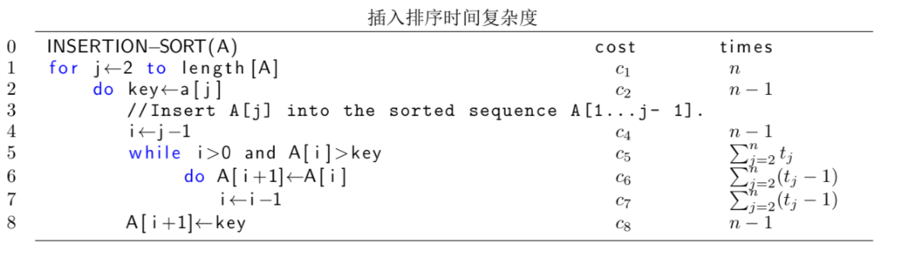

冒泡排序
1 算法描述
插入排序是一个简单的基于插入的排序算法。当输入的数据规模较小或者输入数据基本已经排好序时，这个算法比较有效。此算法也用来配合其他比较高级的算法完成排序。
可以用这样一个场景来描述插入排序：假设待排序列的数字都印在卡片上，并且卡片叠在一起朝下扣在桌面上。此时你手中没有一张卡片。排序开始，你用右手从桌上揭起一张卡片放到左手中，此时左手中有一张卡片，当然这张卡片是排好序的。接着，你又揭起第二张卡片，此时你比较这张卡片和左手中的卡片。如果新揭起的卡片上数字大于第一次揭起的卡片上数字，就把第二张卡片放在第一张卡片右边，否则就放在左边。依次类推。这样，你左手的卡片始终是排好序的，右手那一张新揭起来的卡片是本次排序需要插入的，桌面上的剩余卡片是还没有来得及排序的。当桌面和右手都没有卡片时，左手的卡片就是全部排好序的卡片。
2 示例
3 插入排序伪代码
4 算法分析
图1 给出(5,2,4,6,1,3)的插入排序过程。在伪代码中，索引\(j\)表示当前在右手中的扑克牌，它将要被插入到左手已经排好序的序列中去。在每一次的外部 for 循环中，有序子序列为\(A[1,\ldots,j-1]\)，未排序的序列为\(A[j+1,\ldots,n]\)，待排序的元素为\(A[j]\)。我们用循环不变式来陈述\(A[1,\ldots,j-1]\)的一些特性。
在每一次外部 for 循环中，子序列 \(A[1,\ldots,j-1]\) 对应初始已排序列。
- Initialization 我们证明，在第一次循环中，即\(j=2\)时，循环不变式成立。这是显然的，当\(j=2\)时，子序列\(A[1,\ldots,j-1]=A[1]\)，只有一个元素，当然是成立的。
- Maintenance 我们证明：在接下来的每一次循环中，循环不变式成立。这是很显然的，每一次我们都移动\(A[j-1],A[j-2],\ldots\)为\(A[j]\)找到合适的位置。这样，下一次
for循环开始时，子序列 \(A[1,\ldots,j-1]\) 是已经排好的子序列。 - Termination 最后我们检验当循环结束时排序结果。对于插入排序来说。当\(j > n\)时，排序结束。当\(j=n+1\)时子序列\(A[1,\ldots,n]\)对应已经排好序的子序列，显然这个序列就是我们需要的结果。
以上，我们分析了插入排序的正确性，接下来我们分析插入排序的复杂度。此处我们只分析插入算法的时间复杂度。事实上，一个算法的时间复杂度取决于多种因素，比如输入的数组大小和输入数组的已排序程度。通常来讲一个算法需要的时间随着输入规模的增大而增大。在插入排序中，我们假定伪代码每一行运行需要的时间是固定的，第\(i\)行运行需要时间\(c_i\)。对于每一个\(j=2,3,\ldots,n\)，定义\(t_j\)为需要判断 while 循环条件的次数。当 for 循环和 while 循环结束时，判断条件要比循环体多执行一次。最后，我们标记伪代码中每一行需要的时间。

图 3: 插入排序的时间复杂度
总的运行时间可以表示为:
\begin{equation} \label{eq:1} T(n) = c_1n + c_2(n-1) + c_4(n-1) + c_5\sum_{j=2}^nt_j + c_6\sum_{j=2}^n(t_j-1) + c_7 \sum_{j=2}^n(t_j-1) + c_8(n-1) \end{equation}需要注意的是，即使相同规模的输入，也会产生不同的运行时间。对于插入排序，当输入已经排好序时，运行时间最少，此时\(t_j=1,j=2,3,\ldots,n\)。
\begin{equation} \label{eq:2} T(n) = (c_1 + c_2 + c_4 + c_5 + c_8)n - (c_2 + c_4 + c_5 + c_8) = An+B \end{equation}如果输入序列是按逆序排好的序列，则运行时间最长。此时\(t_j=j,j=2,3,\ldots,n\)
\begin{equation} \label{eq:3} T(n) = (\frac{c_5}{2} + \frac{c_6}{2} +\frac{c_7}{2} )n^2 + (c_1 + c_2 + c_4+\frac{c_5}{2}- \frac{c_6}{2}-\frac{c_7}{2}+c_8)n -(c_2 + c_4 + c_5 + c_8) \end{equation}最差情况可以表述为\(T(n)=An^2+Bn+C\)。
在插入排序的时间复杂度中，我们给出了最好情况和最差情况的复杂度。在以后的分析过程中，我们只分析最差运行时间，也就是对于输入规模为\(n\)的输入的最长运行时间。这样做有三点理由：
- 最差运行时间给出了算法运行时间的上界。也即给出了算法运行永远不会超过的时间。
- 对于一些算法，最差情况经常发生。
- 平均时间复杂度通常趋近于最差情况，至少在数量级上是相同的。
5 插入排序C代码实现
编辑环境:Emacs;编译:GCC;调试:GDB;操作系统:Windows XP SP3;CPU:Intel core i5-2400; memory:3.16GB
1: int * insertion_sort (int a[] ) 2: { 3: int i=0,j=0,key=0; 4: for(j=1;j<10;j++) 5: { 6: key = a[ j ]; 7: i = j-1; 8: while (i>-1 && a[ i ] > key ) 9: { 10: a[ i + 1 ] = a [ i ]; 11: i--; 12: } 13: a[ i+1 ] = key; 14: } 15: return a; 16: }